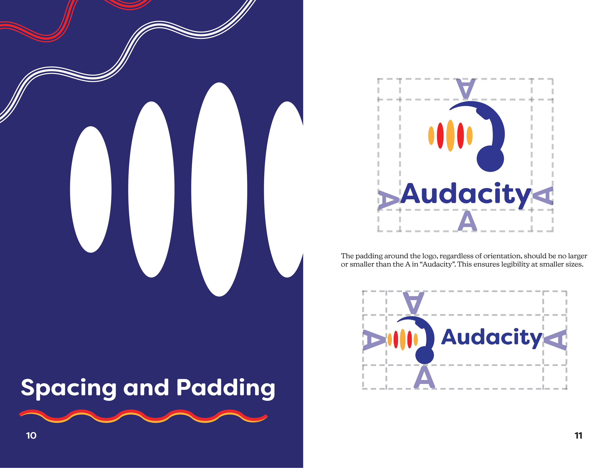
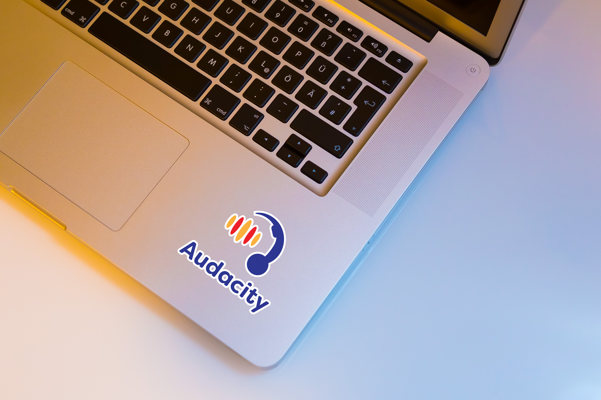
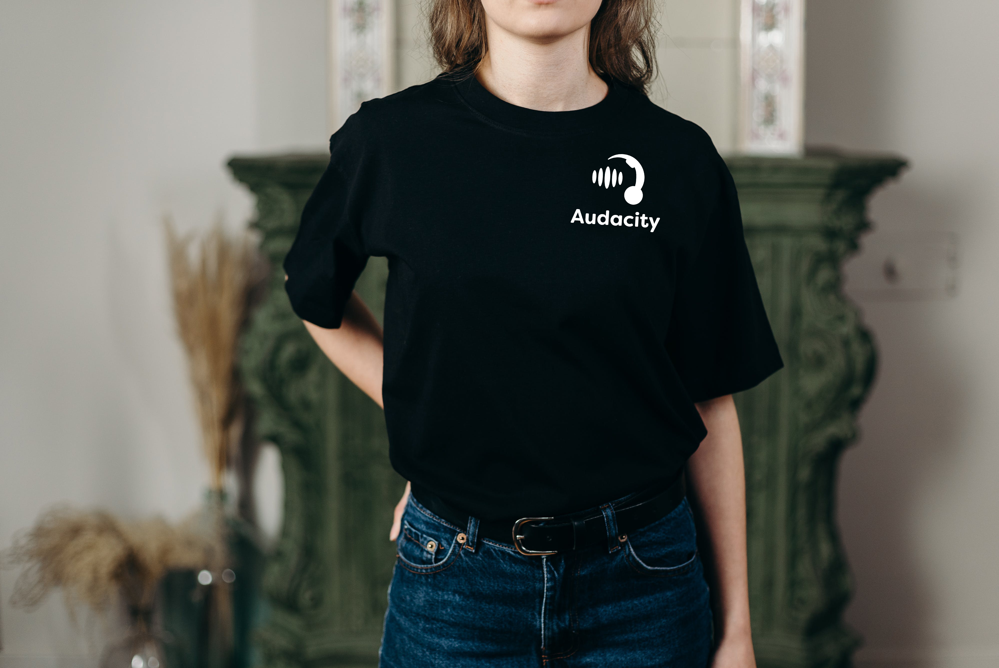
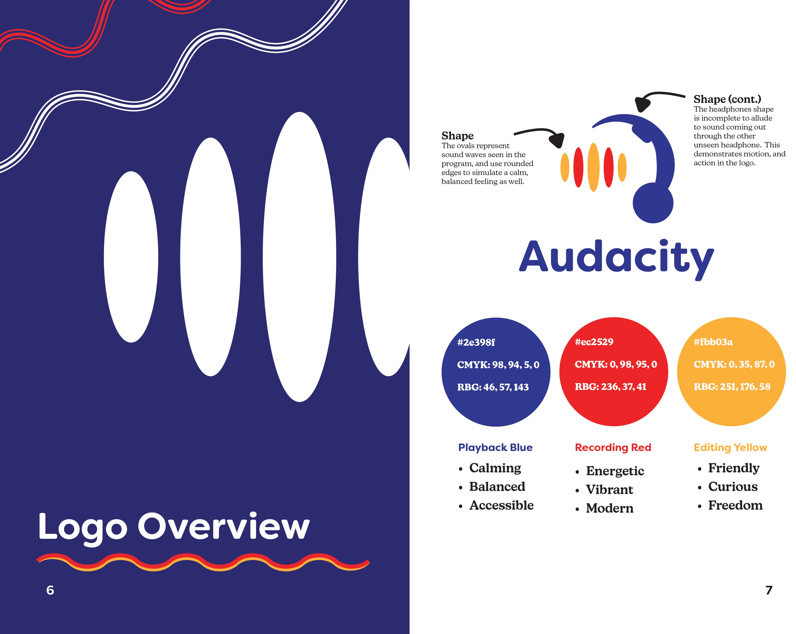

Audacity Logo Redesign and Branding Manual
- Medium: Logo Design, Print Layout
- Date: 2023
- Programs Used: Adobe Illustrator, InDesign
Audacity is a free-to-download program that is used for audio recording and editing. Since its conception, the brand has utilized the same, outdated logo for years. Feeling that the current logo is outdated in today's branding realm, this redesign of the logo aimed to fit modern conventions while still staying true to the brand.
One going through various iterations utilizing iconography associated with audio recording, the final result was an execution that calls back to the original logo with headphones and soundwaves, yet leaves implied lines to simulate the action of sound traveling through the listeners ears. The aim was to keep the colors consistent with the original logo to keep the brand familiar.
As this would be a theoretical major change in branding, an accomodating visual identity manual was created that Audacity could utilize should they choose incorporate the logo. Subjects in this manual include spacing and padding rules, explanations of the form and colors, as well as examples of practical uses for the logo.
Thinking of possible applications and uses helped to guide the project as the manual was built from the ground up. Explaining why certain colors are chosen as well as shape size and typography are essential for a brand to succeed.
 Reflecting back on this project, I am very proud of how far the logo had come from the original iterations. This project allowed served as a way to hone in on typography skills as well as making an organized layout of essential information for a certain company.
